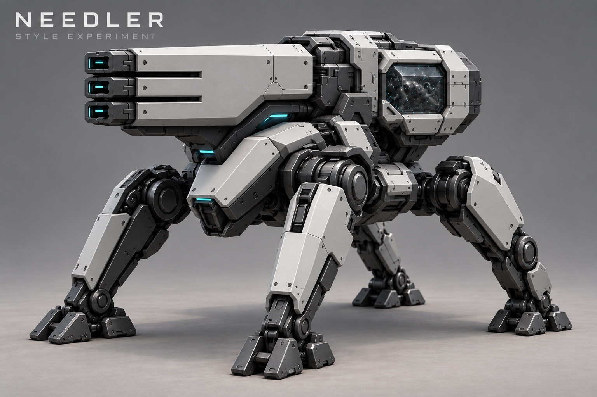
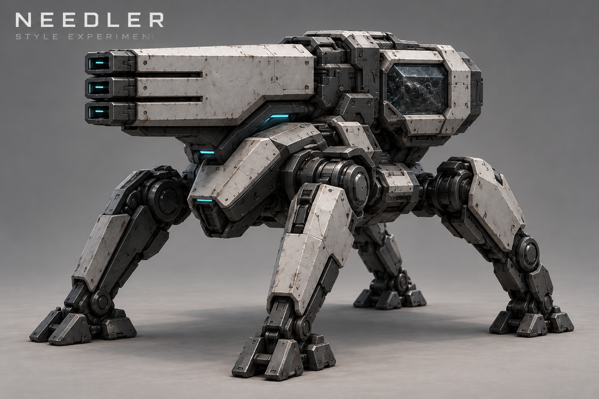

Игломёт — эксперимент со стилем
Не утверждено. Проба материалов Ядра и сборочного узла на существующем Игломёте C. Текущий дизайн и механики не изменены.

Свежесобранный вариант: чистые панели и графитовый металл без ржавчины и потёртостей. Не утверждено.
Первая проба с износом — история

Четыре ноги, три ствола и окно с нанитами в задней части орудия.
Исходный утверждённый лист — вариант C снизу слева